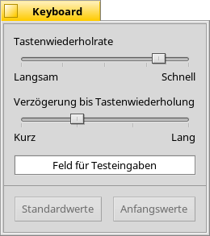
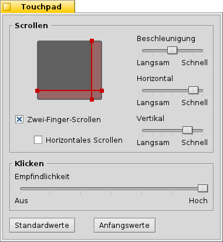

| Index |
|
Tastatur Maus Touchpad |
 Eingabegeräte
Eingabegeräte
| Deskbar: | ||
| Ort: | /boot/system/preferences/Input | |
| Einstellungen: | ~/config/settings/Keyboard_settings ~/config/settings/Mouse_settings ~/config/settings/Touchpad_settings |
Die Einstellungen für Eingabegeräte kombinieren die zuvor einzelnen Panels für Tastatur, Maus und Touchpad, sowie alle sonstigen vom System erkannten Eingabegeräte. Dabei werden links die Geräte aufgelistet, rechts erscheinen die für das gewählte Gerät vorhandenen Einstellungsmöglichkeiten.
 Tastatur
Tastatur

Hier kann die Wiederholrate für einen Tastendruck und die Verzögerung eingestellt werden, die das System wartet, bis eine gedrückte Taste wiederholt wird. Die Einstellungen können in dem Textfeld getestet werden.
| Setzt alle Einstellungen auf die Standardwerte zurück. | ||
| Stellt die Einstellungen wieder her, die aktiv waren als Keyboard gestartet wurde. |
Maus

Im Auswahlmenü links kann die Art der Maus, respektive deren Tastenzahl, ausgewählt werden. Insbesondere für 1-Tasten Mäuse interessant: der Rechtsklick kann mit STRG-Linksklick und ein Klick auf die mittlere Taste mit STRG ALT-Linksklick erzeugt werden.
Die Tastenbelegung kann über das Markieren der entsprechenden Taste und dem dazugehörigen Auswahlmenü geändert werden.
Über die Schieberegler rechts kann die Doppelklick-Geschwindigkeit, die Geschwindigkeit des Mauszeigers und seine Beschleunigung eingestellt werden. Im Testfeld unter der Mausgrafik kann die Doppelklick-Geschwindigkeit getestet werden: Wird ein Wort durch Doppelklick nicht markiert, ist die entsprechende Geschwindigkeit zu hoch eingestellt (oder man muss halt lernen schneller zu klicken...).
Im Auswahlmenü wird bestimmt, wie Programmfenster auf Klicks reagieren. Hierfür gibt es drei Möglichkeiten:
| Das Fenster wird durch Klicken aktiviert und ganz nach vorn geholt. Dies ist die Standardeinstellung. | ||
| Beim Klicken auf ein Fenster wird dieses nur aktiviert, aber nicht automatisch in den Vordergrund geholt. Dies gelingt entweder durch Klicken auf den Fensterreiter beziehungsweise -rahmen oder durch Klicken irgendwo im Fenster, während die Fenstermanagement-Tasten STRG ALT gehalten werden. | ||
| Das Fenster unter dem Mauszeiger wird automatisch aktiviert. Um es in den Vordergrund zu holen, geht man vor wie bei beschrieben. |
Die Option vermeidet, ein Fenster erst aktivieren zu müssen, bevor eine Schaltfläche gedrückt oder ein Menü geöffnet werden kann. Allerdings besteht dann Gefahr, aus Versehen beispielsweise statt des Fensterreiters den "Schließen"-Button zu treffen und ein Programm ungewollt zu beenden. Andererseits kann damit der Arbeitsfluss deutlich beschleunigt werden.
Alle Einstellungen werden sofort im System übernommen.
| Setzt alle Einstellungen auf die Standardwerte zurück. | ||
| Die Einstellungen, die aktiv waren, als das Programmfenster geöffnet wurde, werden wieder hergestellt. |
Touchpad

Mit den vertikalen und horizontalen roten Linien der Touchpad Darstellung lässt sich ein Scroll-Bereich definieren (rötlich gefärbt gegenüber der grauen normalen Navigationsfläche). Streicht man mit dem Finger über diesen Teil des Touchpads, bewegen sich die Scrollbalken eines Fensters entsprechend.
Mit den Schiebereglern rechts daneben lässt sich die allgemeine Scroll-Beschleunigung und die vertikalen und horizontalen Scroll-Geschwindigkeiten einstellen.
Je größer die Beschleunigung, desto schneller scrollt eine Liste wenn man den Finger ganz schnell über den Scroll-Bereich bewegt. Die Scroll-Geschwindigkeit bestimmt das Verhalten beim "normal-schnellen" Überstreichen des Bereichs.
Unter der Touchpad Grafik lässt sich "Zwei-Finger-Scrollen" für horizontales und vertikales Scrollen aktivieren. Bewegt man zwei Finger parallel in der Vertikalen oder Horizontalen, bewegen sich die Scrollbalken eines Fensters entsprechend. Zumindest bei mir funktioniert das am besten mit jeweils einem Finger der linken und der rechten Hand.
Wer mit diesem Feature zurecht kommt, der kann auf Scroll-Bereiche verzichten und das gesamte Touchpad zum normalen Navigieren nutzen
Ganz unten ist noch ein Regler zum einstellen der Berührungsempfindlichkeit. Werden Klicks per Antippen immer wieder ignoriert, sollte man die Empfindlichkeit erhöhen. Werden im Gegenteil immer irgendwelche Klicks registriert, obwohl eigentlich nur der Mauszeiger bewegt werden soll, sollte sie verringert werden.
| Setzt alle Einstellungen auf die Standardwerte zurück. | ||
| Setzt wieder die Werte, die aktiv waren als das Touchpad Panel gestartet wurde. |
Folgender Tip bezieht sich nicht so sehr auf dieses Einstellungs Panel, sondern auf die Nutzung von Touchpads allgemein:
Wusstest Du, dass man ein Drag & Drop nur per Touchpad ausführen kann, also ohne die Tasten zu benutzen? Dazu macht einfach einen Doppelklick, ohne jedoch den Finger nach dem zweiten Klick anzuheben. Das so aufgenommene Icon hängt nun am Mauszeiger und kann mit dem Finger auf dem Touchpad umher bewegt werden. Hebt man den Finger, wird das Icon fallen gelassen.
Angenommen der Finger erreicht beim Ziehen eines Icons den Rand des Touchpads, der Mauszeiger ist aber noch nicht am Bildschirmrand angekommen. Sobald man den Finger hebt, wird ja das Icon fallen gelassen. Wie also lässt sich das Icon weiterziehen?
Je nach verbauter Hardware gibt es da ein nettes Feature: man lässt den Finger einfach am Rand des Touchpads, aber ohne den Finger zu heben. Der Mauszeiger fliegt dann einfach weiter wie auf Auto-Pilot.